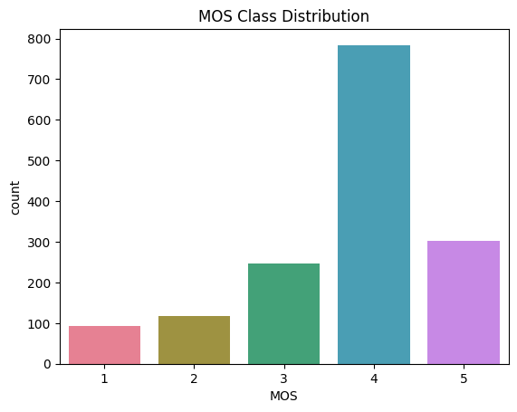
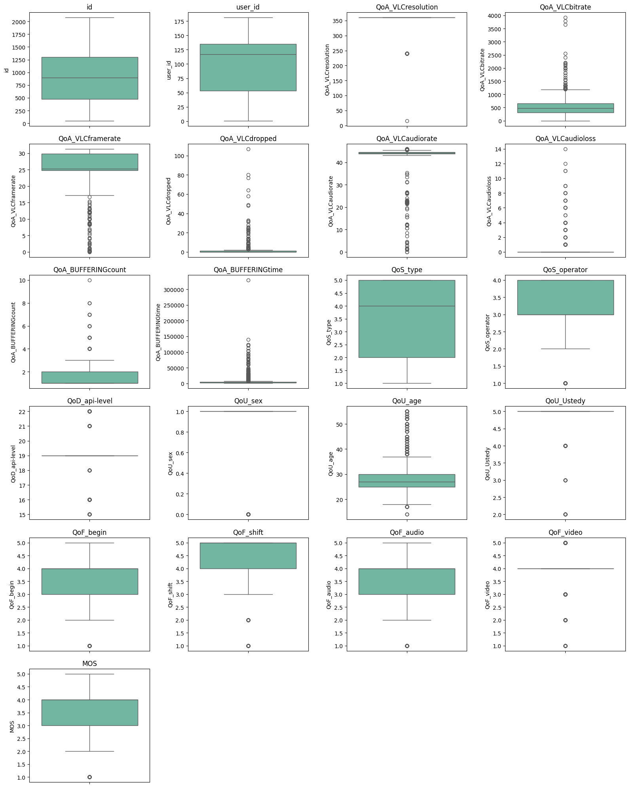
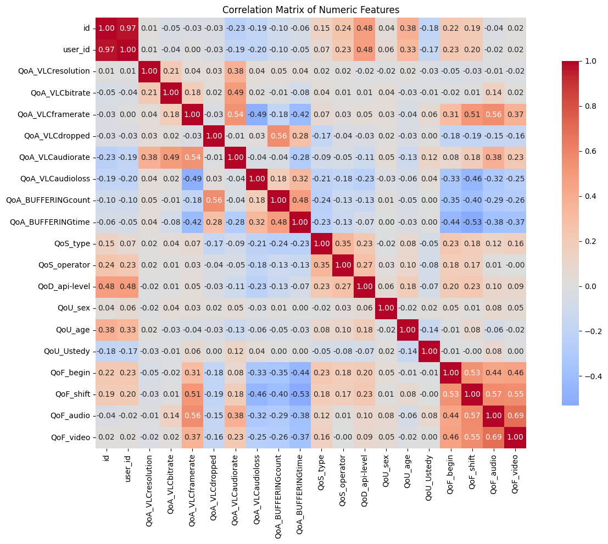
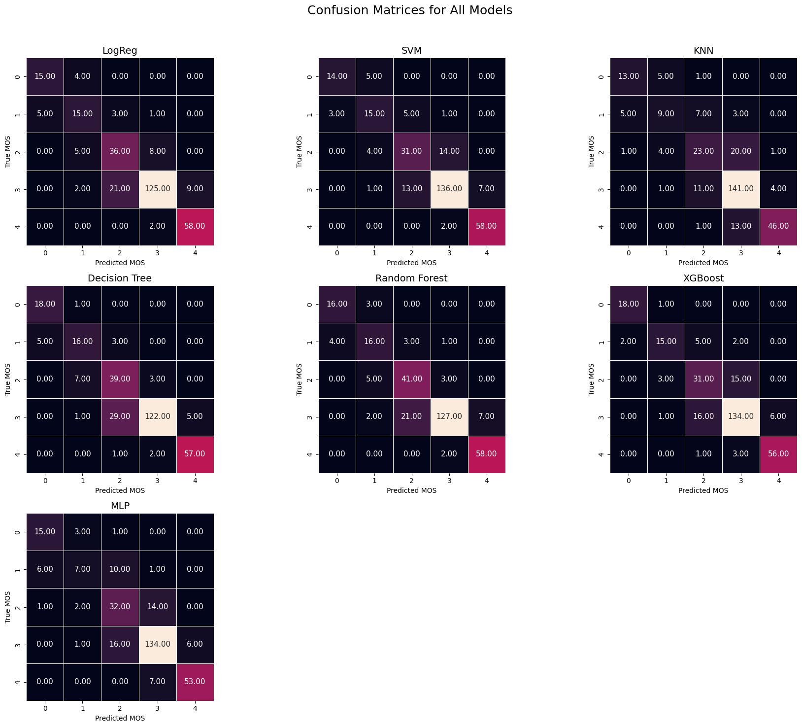
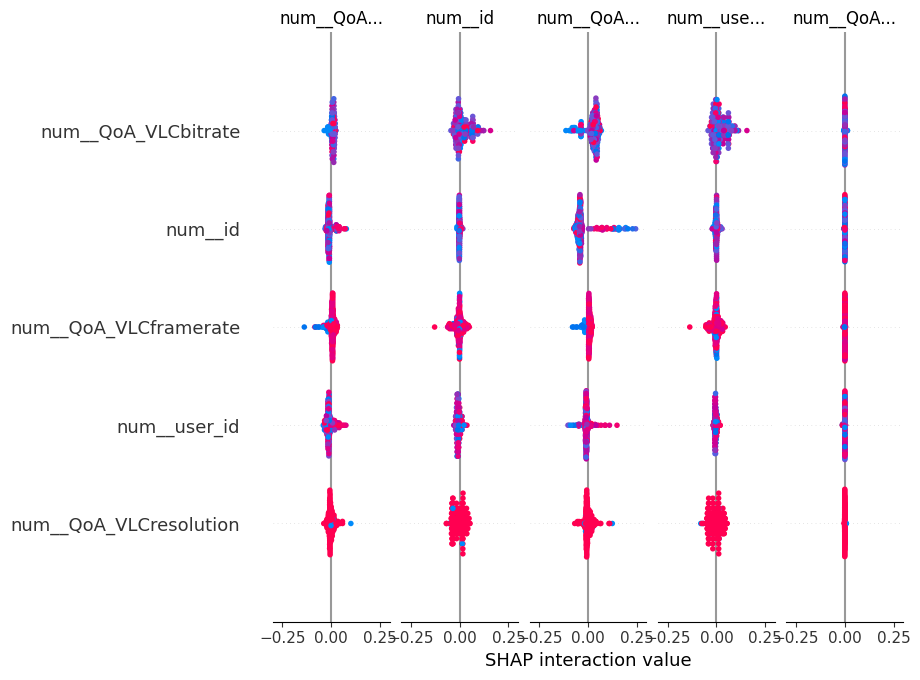

Observed signals
Playback behaviour, network conditions, device properties and user context for each mobile video session.
A study of which technical signals best explain how viewers rate a mobile streaming session, and whether using more contextual data actually improves prediction.
01 / Context
A streaming platform can record bitrate, buffering, dropped frames and network conditions. Those measurements describe the service, but the final question is human: did the viewer experience the session as good or bad?
Quality of Experience connects the two through a Mean Opinion Score (MOS) from 1 to 5. I studied whether playback, network, device and user signals can predict that score, and which of those signals actually help.
Playback behaviour, network conditions, device properties and user context for each mobile video session.
A subjective quality score. Two technically similar sessions can still be perceived differently.
02 / Modelling challenges
Quality of Experience connects measurable network events to a subjective human rating. The relationship is useful, but noisy, imbalanced and influenced by several feature families.
MOS records a viewer judgement, not a direct physical measurement.
Similar technical sessions can receive different scores.
Ratings 4 and 5 dominate, while poor sessions are rare.
Accuracy can hide weak recognition of the cases that matter most operationally.
Playback, network, device and user variables differ in coverage, scale and reliability.
Additional context can add noise and reduce generalisation.
MOS classes have a natural order from 1 to 5.
A one-level error should be interpreted differently from a prediction at the opposite end of the scale.
03 / Objectives and constraints
The dataset combines four feature families: application behaviour (QoA), network service (QoS), device information (QoD) and user context (QoU). Device models have a long tail of rarely observed categories, and the target strongly favours ratings 4 and 5.
This creates two risks. A model can achieve a reassuring overall score by mostly recognising the dominant classes; and weak contextual variables can add noise while appearing useful simply because they increase the feature count.
Which model predicts perceived quality most reliably, and does a focused QoA + QoS feature set generalise better than the complete table?
Compare model families under one holdout and cross-validation protocol.
Use weighted F1 as the primary comparison, then read confusion matrices for individual classes.
Compare the full feature configuration with a smaller QoA + QoS configuration.
Explain prediction patterns and inspect where ratings are confused.
04 / Exploratory analysis
The target distribution immediately ruled out accuracy as the only metric. Class 4 dominates the sample, while classes 1 and 2 contain far fewer sessions. I therefore kept weighted F1 for overall performance and macro F1 to give every MOS class equal visibility. Weighted F1 became the primary model selection metric; confusion matrices reveal errors hidden by an average.
Bitrate, frame rate, buffering duration and count, dropped frames, audio loss.
Network conditions and service information associated with each session.
Device model and operating system; many model categories appear only rarely.
Basic demographic and usage descriptors, including age and gender.

Buffering duration and count, dropped frames and audio loss show skewed distributions with rare severe events. Discarding these sessions would remove the very degradations a QoE model should recognize. The protocol keeps the rows and caps numerical extremes at training-derived percentile limits.

Buffering measures are moderately related to each other and to
dropped frames. No meaningful input was dropped solely because
of the correlation matrix. Session id and
user_id were excluded because identifiers can create
spurious patterns without describing perceived quality.

05 / Experimental protocol
I reserved 20% of the sessions for final testing. Encoding, scaling, percentile limits, feature decisions and hyperparameter selection used only the 80% training portion. This keeps information from the holdout out of the fitted pipeline.
id and user_id identify sessions and users; neither describes playback quality. I excluded them before modelling. The correlation analysis did not justify dropping the measured playback variables: related features can still capture different aspects of an interruption.
An 80/20 split gave a training portion for preprocessing and model selection and a separate holdout for final scores. Data-derived transformations and tuning used the training portion only, preventing the holdout from influencing fitted settings.
Network type, device model and similar categories were one-hot encoded. A model can then use each category independently without treating arbitrary category codes as magnitudes.
Numerical variables were standardized with z-scores. Scale particularly affects logistic regression, SVM and KNN because their optimization or distance calculations depend on input magnitudes. Tree models were evaluated through the same general pipeline for comparison.
Buffering time, dropped frames and audio loss contain rare high values that may represent real failures. Winsorisation capped numerical extremes at the training-derived 1st and 99th percentiles, limiting their influence while preserving the observations.
The initial full configuration included a derived feature combining buffering duration and bitrate. It represented the idea that an interruption could be perceived differently under different delivery conditions. I used it as a controlled feature-engineering attempt, then removed it in the reduced configuration to keep that comparison interpretable.
The full configuration used QoA, QoS, QoD, QoU and the derived feature. The reduced configuration kept QoA and QoS, removing the device and user groups and the engineered feature. The measured change therefore belongs to that complete configuration change.
Ratings 4 and 5 dominate, while ratings 1 and 2 are scarce. I used class-weighted losses for compatible models and weighted F1 as the main comparison metric, then checked per-class errors in the confusion matrices.
The test portion remained untouched during cross-validation, grid search and preprocessing decisions. The 1st/99th percentile treatment changes feature values, not the number of sessions.
06 / Modelling
MOS is ordered, but I formulated prediction as multiclass classification. This avoids treating the distance between successive ratings as necessarily equal. The model comparison probes different assumptions on mixed tabular data with only several hundred sessions.
A baseline for relationships captured without nonlinear splits.
Tests nonlinear decision boundaries on standardized features.
Tests whether nearby sessions share a quality rating.
Captures threshold effects and interactions in one interpretable tree.
Combines trees to model nonlinear interactions across playback conditions.
Checks whether a small neural model helps on this tabular sample.
Accuracy measures the share of exact ratings, but it can look strong when common ratings dominate. F1 combines precision and recall. Weighted F1 averages class-level F1 using each class’s support and was the report’s main selection metric. Macro F1 gives each rating equal weight, so it helps reveal performance differences hidden by the class distribution. Confusion matrices provide the actual error pattern for every rating.
Weighted F1 alone does not guarantee good performance on rare ratings: common classes receive more weight. I therefore show macro F1 and inspect the confusion matrices as complementary views.
I used a limited grid search with cross-validation on the 80% training portion for model settings. The held-out 20% was used after that process for the reported comparison. I kept the tuning step limited so the comparison stayed focused on modelling assumptions and feature scope, with final scores reserved for the untouched test set.
07 / Results
With all feature groups, tuned Random Forest reached 0.832 weighted F1. On the reduced QoA + QoS configuration it reached 0.839, a gain of 0.007. XGBoost was close on weighted F1 and slightly higher on macro F1 in both comparisons.
Tree ensembles led the comparison, consistent with interactions among playback variables that a linear baseline cannot express directly. KNN had the lowest weighted F1 on the full configuration and benefited most from reducing the feature set. The MLP did not improve on the tree ensembles in this sample; with several hundred observations, its flexibility was not an advantage here.
| Model | Full · weighted F1 | Reduced · weighted F1 | Change |
|---|---|---|---|
| Random Forest · tuned | 0.832 | 0.839 | +0.007 |
| XGBoost · tuned | 0.821 | 0.822 | +0.001 |
| Logistic regression | 0.797 | 0.810 | +0.013 |
| SVM | 0.792 | 0.822 | +0.029 |
| MLP | 0.775 | 0.776 | +0.001 |
| KNN | 0.703 | 0.744 | +0.041 |
Rounded from the two result tables. The standalone Decision Tree appears in the confusion matrices, but its aggregate score is not listed in the same comparable format. Because the reduced setting removed QoD, QoU and the engineered interaction together, the gain should be read as a feature-set result.
The reduction improved weighted F1 across the six tabulated models, but the size of the gain varied. The full and reduced comparisons therefore support a narrower feature scope for this dataset; they do not establish that device or user context is always unhelpful.
| Model · QoA + QoS | Accuracy | Weighted F1 | Macro F1 |
|---|---|---|---|
| Random Forest · tuned | 0.835 | 0.839 | 0.797 |
| XGBoost · tuned | 0.822 | 0.822 | 0.799 |
| SVM | 0.822 | 0.822 | 0.766 |
| Logistic regression | 0.806 | 0.810 | 0.759 |
| MLP | 0.780 | 0.776 | 0.690 |
| KNN | 0.751 | 0.744 | 0.655 |
A confusion matrix places the true class on each row and the predicted class in each column. Values on the diagonal are correct predictions; off-diagonal values show exactly which ratings were confused.

Random Forest and XGBoost have strong diagonals. KNN has visibly more spillover, including at the low end of the rating scale. Errors from very poor to very good quality are rare. The boundary between moderate and good quality remains harder to classify, which is plausible for a subjective score.
08 / Interpretation
The reduced experiment slightly improved weighted F1 for every tabulated model. This is consistent with the long tail of device categories and the stronger playback signals in this sample. The experiment also removed the engineered interaction, so it does not quantify QoD or QoU independently.
SHAP assigns a contribution to each feature for a model prediction. Across many sessions, the spread of these contributions helps explore which inputs the model uses and how their effects vary. These values describe the fitted model; they do not establish a causal effect on a viewer.

id and user_id.The interpretation is consistent with the rest of the analysis: buffering, dropped frames and bitrate carry most of the useful signal. The supplied SHAP image also shows identifiers that were excluded in the written preprocessing protocol, so I treat this specific graphic as exploratory and use the model comparison plus ablation results as the stronger evidence.
The model comparison, ablation and SHAP discussion point toward playback conditions, especially interruptions, bitrate and frame stability.
The model understood the ordering imperfectly: it usually missed by one adjacent MOS level.
Random Forest gained 0.007 weighted F1, while KNN gained 0.041. The effect varied across model families.
09 / Critical perspective
MOS is subjective, the sample covers several hundred sessions, and evaluation comes from one mobile streaming dataset. These results describe this experiment; external data would be needed to establish how the models perform across services and networks.
Treating MOS as five classes ignores that confusing 4 with 5 is less severe than confusing 1 with 5. Ordinal objectives would be a useful extension.
A stronger study would validate on another network, device population or streaming service.
More low-quality sessions would make conclusions about classes 1 and 2 more reliable.
On a modest tabular dataset, feature scope and evaluation design mattered at least as much as trying another model family. Removing the device and user groups together with the engineered feature slightly improved the tested models, while the confusion matrices showed a persistent boundary between adjacent ratings. The project also reinforced a practical lesson: an explanation plot has to be checked against the exact evaluated pipeline before its ranking is used as evidence.